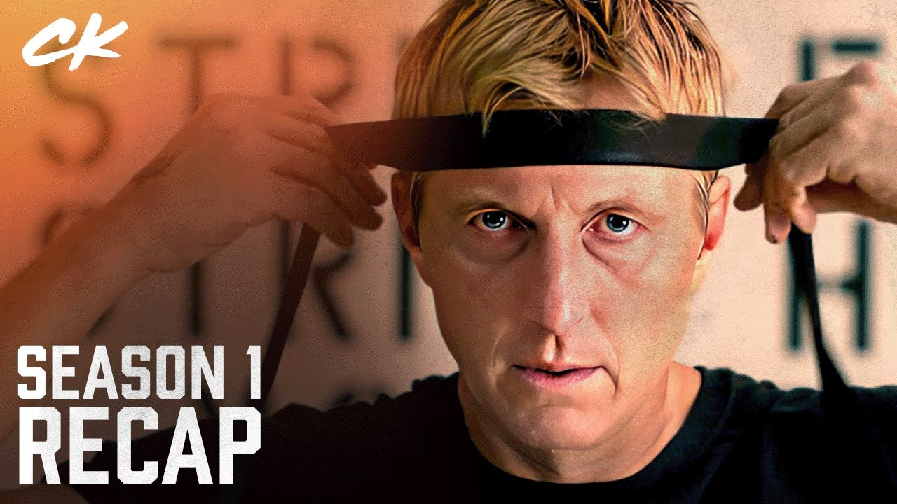
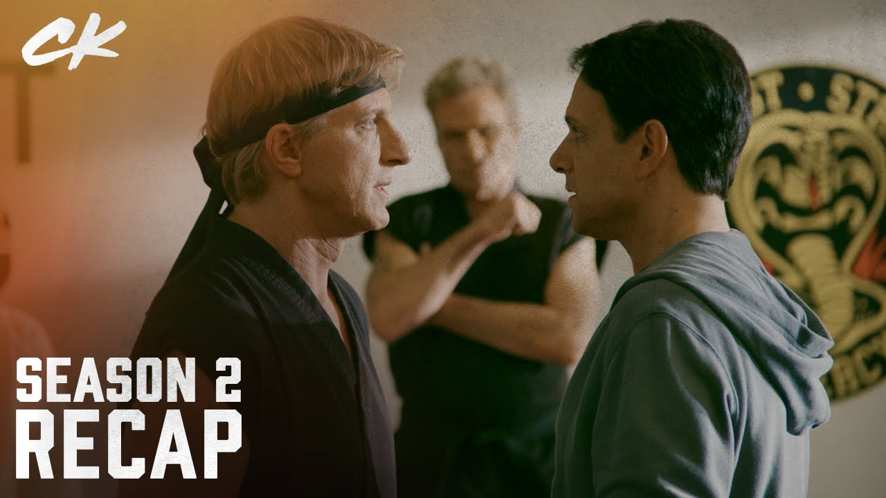
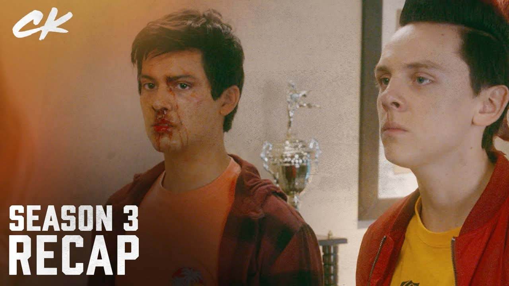
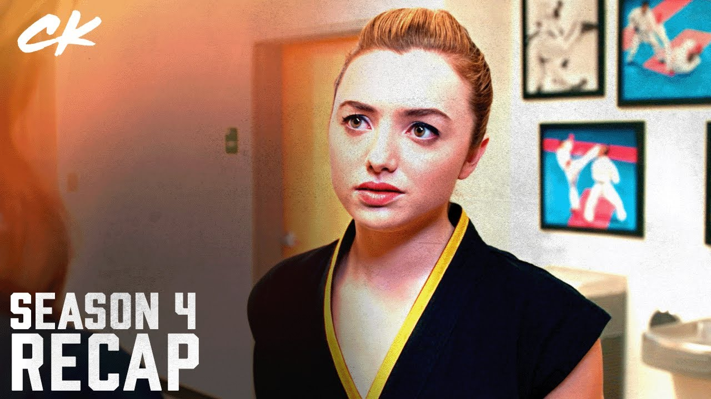
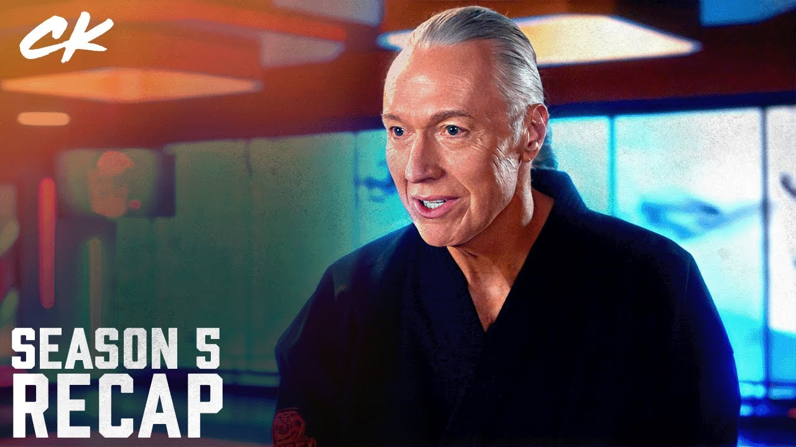
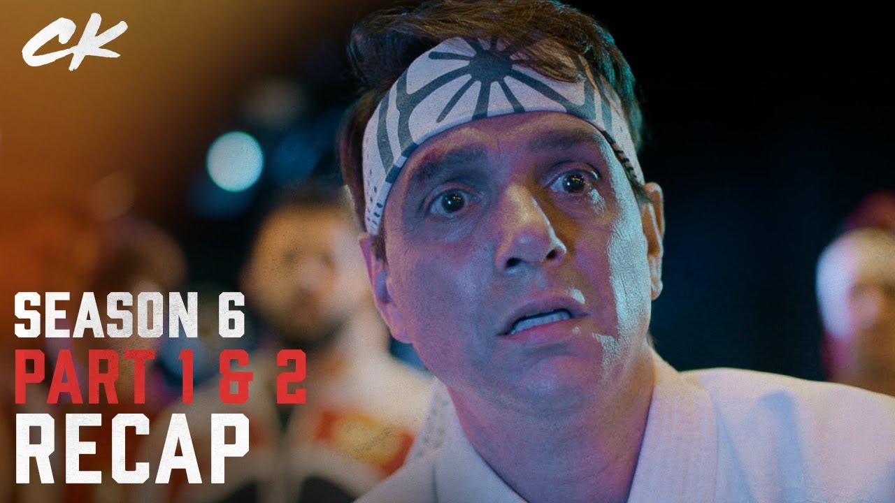

FICHA TECNICA
The Karate Kidde Robert Mark Kamen
SINOPSIS
Primera temporada
33 años después de ser derrotado por Daniel LaRusso en el Torneo de Karate All-Valley de 1984, Johnny Lawrence, ahora en sus 50 años, sufre de alcoholismo y depresión. Trabaja como personal de mantenimiento a tiempo parcial y vive en un apartamento en Reseda, Los Ángeles, habiendo estado lejos del estilo de vida rico en Encino, al que se había estado acostumbrado al crecer. Tiene un hijo llamado Robby, de una relación anterior, de quien está alejado. Por el contrario, Daniel ahora es dueño de una exitosa cadena de concesionarios de automóviles y está casado con la copropietaria Amanda, con quien tiene dos hijos: Samantha y Anthony. Daniel finalmente está viviendo el estilo de vida rico que envidiaba cuando era niño, cuando él y su madre Lucille vivían en Reseda. Sin embargo, después de que su amigo y mentor, el Señor Miyagi, murió, la lucha de Daniel por conectarse significativamente con sus hijos ha alterado el equilibrio de su vida. Después de usar karate para defender a su vecino adolescente, Miguel Diaz, de un grupo de matones, Johnny acepta enseñarle karate a Miguel y vuelve a abrir el Dōjō de karate Cobra Kai, como una oportunidad para recuperar su pasado. El revivido Cobra Kai atrae a un grupo de marginados sociales acosados, que encuentran camaradería y confianza en sí mismos bajo su tutela y el aprendizaje de karate. Johnny desarrolla un vínculo con Miguel de una manera que se asemeja a la relación entre Daniel y el Sr. Miyagi, mientras que Miguel sale con Samantha. La filosofía de Cobra Kai, sin embargo, permanece prácticamente sin cambios, aunque Johnny intenta infundirle más honor que Kreese. Por otro lado, la reapertura de Cobra Kai revive la rivalidad de Johnny con Daniel, quien promete derribar el Dōjō. Daniel comienza a entrenar a Robby bajo los métodos de Miyagi-Do, mientras Robby comienza una rivalidad con Miguel. Las rivalidades culminan en el Torneo de Karate All-Valley 2018, el cual Miguel logra ganar mediante tácticas solapadas, lo que hace que Johnny se dé cuenta de los defectos del Dōjō.
Segunda Temporada
El fundador de Cobra Kai y antiguo sensei de Johnny, John Kreese, reaparece inesperadamente, y Johnny, de mala gana, le permite volver a unirse a Cobra Kai. Mientras tanto, Daniel abre su propio Dōjō, Miyagi-Do, con Robby y Sam, quienes han comenzado a salir, como sus primeros alumnos en respuesta al éxito de Cobra Kai. Se forma una rivalidad masiva entre los dos Dōjōs, particularmente entre Sam y la nueva estudiante de Cobra Kai, Tory Nichols, la última de las cuales comienza una relación con Miguel. Ante las narices de Johnny, Kreese comienza a manipular a los estudiantes de Cobra Kai, para enseñarles a no mostrar piedad, método el cual Tory y Eli «Hawk» Moskowitz abrazan. Después de presenciar a Miguel y Sam besándose en una fiesta, Tory instiga una pelea en el instituto entre los Dōjōs, que culmina cuando Robby accidentalmente patea a Miguel desde el balcón de la escuela hacia las escaleras de abajo, lastimándole gravemente la columna y provocando que caiga en coma. Posteriormente, Amanda convence a Daniel para que cierre Miyagi-Do, ya que la rivalidad se ha salido de control, mientras que Kreese toma el control del Dōjō Cobra Kai.
Tercera temporada
Después de la pelea en el instituto, Johnny recae y se vuelve al alcoholismo, debido a que está deprimido por la discapacidad de Miguel, mientras que el negocio de Daniel comienza a tener problemas debido a la afiliación de Robby con Miyagi-Do. Después de conseguir una pista sobre Robby, que ha desaparecido, los dos trabajan juntos temporalmente en un esfuerzo por encontrarlo, antes de finalmente darse por vencidos. Robby es encontrado y puesto en un centro de detención juvenil, enojándose tanto con Daniel como con Johnny, y siendo tentado por la oferta de Kreese de unirse a Cobra Kai. Mientras tanto, Miguel despierta del coma y comienza a entrenar con Johnny para intentar volver a caminar. Una vez que Miguel recupera su capacidad para movilizarse, Johnny comienza un nuevo Dōjō llamado Eagle Fang Karate, en un esfuerzo por competir con Cobra Kai, lo que llama la atención de Kreese. Casi al mismo tiempo, Amanda le permite a Daniel reabrir Miyagi-Do, después de que una batalla entre sus antiguos alumnos y Cobra Kai lleva a que Hawk, reacio, le rompa el brazo a Demetri. Inicialmente negándose a trabajar juntos, Johnny y Daniel resuelven sus diferencias después de volver a encontrarse con la exnovia de ambos, Ali Mills, en una fiesta. Al mismo tiempo, los Cobra Kais, bajo el liderazgo de Tory, invaden la casa de los LaRusso, donde Hawk abandona a Cobra Kai para unirse a la alianza, y Cobra Kai es derrotado por Miyagi-Do y Eagle Fang, quienes eligen trabajar juntos. Después de descubrirlo, Daniel y Johnny se enfrentan a Kreese, quien revela que Robby se ha unido a Cobra Kai y les da un ultimátum: el Dōjō que pierda el próximo torneo All-Valley debe cerrar para siempre. Los tres están de acuerdo, y Johnny y Daniel fusionan sus respectivos Dōjōs. A lo largo de la temporada, hay flashbacks de la época de Kreese en Vietnam, que describen cómo se convirtió en el hombre que es hoy.
Cuarta temporada
En un esfuerzo por vencer a Johnny y Daniel en el All-Valley, Kreese solicita la ayuda de su mejor amigo y cofundador de Cobra Kai, Terry Silver, un hombre de negocios rico y ex adicto a la cocaína, que dejó el karate después de ayudar a Kreese con sus planes en The Karate Kid Part III. A pesar de que inicialmente se muestra reacio, Silver se ve obligado a unirse a Kreese, pero tiene puntos de vista diferentes sobre cómo ganar el torneo. Aunque su alianza inicialmente funciona muy bien, el regreso de Silver incita a Daniel a intentar tomar el control total de la alianza Miyagi-Fang, lo que enfurece a Johnny, quien está paranoico porque Miguel está siguiendo las enseñanzas de Daniel. Esto culmina en una pelea entre los dos, que deja a los dos Dōjōs divididos una vez más. Durante esto, Tory se reincorpora a la escuela, con la ayuda de una comprensiva Amanda, lo que hace que se reavive su rivalidad con Sam. Además, Robby comienza a entrenar a Kenny Payne, un joven estudiante acosado por Anthony, el hijo de Daniel, en un esfuerzo por ser el mentor que desearía tener, y desarrolla una relación con Tory. En el torneo, que se divide entre chicas y chicos, Robby se enfrenta a Eli y pierde después de tener una crisis de fe, debido al comportamiento cada vez más violento y vengativo de Kenny contra Anthony. Después de la derrota de Robby, Daniel y Johnny liberan los beneficios de las costumbres de este último y optan por recombinar los Dōjōs. Sin embargo, Tory derrota a Sam (ilegalmente, debido a que Silver sobornó al árbitro), lo que hace que Cobra Kai gane el torneo en general. Habiendo escuchado a Johnny llamarlo Robby por error antes, después de que Robby se burlara de él porque Johnny lo usaba como una segunda oportunidad para compensar sus problemas de relación con Robby, Miguel abandona el torneo en un esfuerzo por encontrar a su padre biológico en México. Mientras tanto, Silver, al darse cuenta de que Kreese tiene debilidad por Johnny y después de haber recaído en la locura, incrimina a Kreese por golpear al estudiante de Cobra Kai, Raymond «Stingray» Porter, y toma el control total del Dōjō.
Quinta temporada
A pesar de haber perdido el All-Valley, Johnny y Daniel continúan sus esfuerzos para derribar a Cobra Kai, que ahora contiene los recursos y el respaldo de Silver. Para hacer esto, Daniel llama a su ex rival Chozen Toguchi, para que lo ayude y lo envía de incógnito. Sin embargo, Silver comienza a manipular a Daniel y a arruinar su vida, incluso haciendo que Amanda lo deje temporalmente. Silver trae senseis extranjeros al Dōjō, incluida la sensei Kim Da-Eun, la nieta de Kim Sun-Yung (antiguo sensei de Kreese y Silver), para ayudarlo en sus planes. Tory, todavía leal a Kreese ahora encarcelado, trabaja encubierta en Cobra Kai, ya que es la única persona que sabe que Silver sobornó al árbitro. Después de regresar de México, Sam rompe con Miguel, pero éste resuelve su rivalidad con Robby después de que Johnny los obliga a pelear, cuando se entera de que Carmen está embarazada. Después de que Amanda descubre por parte de su prima, Jessica Andrews, la verdadera depravación de Silver, Johnny y Chozen convencen a un desilusionado Daniel a reavivar su pasión por el karate. Los Dōjōs continúan trabajando juntos y, al manipular a Kreese, descubren el plan maestro de Silver para alistar a Cobra Kai en el torneo Sekai Taikai, el torneo de karate más respetado del mundo. En una competencia entre los dos, ambos Dōjōs finalmente logran alistarse. Durante una celebración del embarazo de Carmen, Mike Barnes, el ex secuaz de Silver de 1985, secuestra a Daniel, Johnny y Chozen, ya que Silver incendió su tienda de muebles anteriormente. Inicialmente acusa a Daniel de quemar la tienda, pero cuando Barnes se da cuenta de que fue culpa de Silver, recluta a Johnny y Chozen en un esfuerzo por vengarse de él en su casa, donde los tres se enfrentan a su ejército de senseis. Esto se yuxtapone con los estudiantes de Miyagi-Fang, quienes, junto con una Tory reformada, irrumpen en el Dōjō Cobra Kai para descargar imágenes de Silver golpeando a Stingray, donde se enfrentan a todo el Dōjō Cobra Kai, así como a Kim Da-Eun. Finalmente, suben un video de Silver revelándole a Tory que sobornó al árbitro, lo que provocó que Kenny y el resto de Cobra Kai renunciaran, Silver fuera arrestado y el Dōjō cerrara. Posteriormente, Miguel y Sam, así como Robby y Tory, reavivan su relación. Sin embargo, en la cárcel, Kreese finge su muerte y escapa.
Sexta temporada
Durante la primera parte, tiene lugar el entrenamiento de Miyagi Do a manos de Johnny y Daniel para ver quienes lucharán en el Sekai Taikai. Daniel descubre una segunda vida de Miyagi más oscura que le intriga y los jóvenes están preocupados por la universidad a la que van a ir. Kreese llega a Corea del Sur para entrenar, junto con Kim Da Eun, a Cobra Kai. El Sekai Taikai sólo admite a 6 peleadores, por lo que tiene lugar un entrenamiento eliminatorio y acaban ganando Miguel, Robby, Demetri, Sam, Tory y Devon; pero, en el último momento, Tory se retira del entrenamiento por la muerte de su madre, y su puesto lo cubre Hawk. El Sekai Taikai se celebra en Barcelona, España; y cuando llegan, descubren que Cobra Kai ya está ahí, con Tory en sus líneas. Durante la segunda parte, ocurren los primeros enfrentamientos del Sekai Taikai, y Miyagi-Do no tiene el desempeño que se esperaba. Daniel tiene problemas tratando de averiguar el pasado de Miyagi y los peleadores de Miyagi-Do tienen disputas contra el equipo de Cobra Kai y también disputas entre los mismos peleadores de Miyagi-Do. Miguel y Johnny vuelven a Estados Unidos al enterarse de que Carmen presenta problemas en su embarazo, y Johnny le pide a Amanda Larusso que lleve a Kenny a Barcelona, y Kenny resuelve los problemas con Anthony. Terry Silver vuelve a aparecer en el Sekai Taikai, con todos los cargos retirados, después de prometerle al Sensei Wolf salvarlo de la crisis financiera si con su equipo, Iron Dragons, lograban humillar a Cobra Kai y a Miyagi Do en el torneo mundial. En el último día del torneo, ocurre una batalla campal entre todos los Dōjōs, pero ocurre un trágico final, en el que Kwon Jae-Sung (El capitán masculino de Cobra Kai) muere accidentalmente al apuñalarse con un eunjangdo, finalizando con la reacción de impacto de todos los presentes, y cortando la señal de la transmisión televisada.